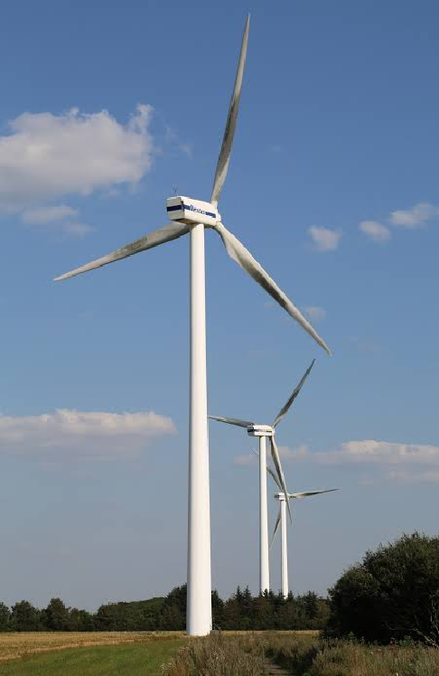

|
 https://windbox.com.br/blog/componentes-dos-aerogeradores/ |
Energia Eólica: Perspectiva no Cenário NacionalA mudança mundial para fontes de energia mais limpas já não é um objetivo futuro, mas sim uma força que está transformando a economia neste século. O Brasil, com seu grande território e clima favorável, assume um papel importante nessa transformação, impulsionando a produção de energia limpa. A energia dos ventos, em especial, se firmou como um dos principais elementos do nosso sistema elétrico, vencendo obstáculos técnicos e geográficos para gerar eletricidade de forma barata, sustentável e com poucos danos ao meio ambiente. Hoje em dia, o ramo da energia eólica no Brasil desfruta de um período de notável evolução. A aplicação de recursos digitais e análise inteligente de informações impulsionou a performance dos complexos eólicos terrestres a patamares nunca antes vistos, notadamente nas áreas do Nordeste e Sul. Indo além da simples produção de eletricidade, esta forma de energia tem impulsionado mudanças sociais e econômicas, atraindo grandes somas de dinheiro, criando postos de trabalho especializados e aumentando a proteção energética nacional face às mudanças do clima que impactam as usinas hidrelétricas comuns. Ao projetarmos o olhar para 2026 e adiante, o horizonte se ilumina com a energia eólica em águas oceânicas, um campo ainda inexplorado. Graças à evolução das normas e aos recentes planos técnicos, a utilização dos ventos marinhos tem o potencial de impulsionar a produção energética nacional a níveis surpreendentes. Este estudo visa examinar minuciosamente o percurso que o Brasil está trilhando, abrangendo desde o mecanismo de funcionamento dos geradores eólicos até as estratégias governamentais que visam converter o potencial da costa brasileira no motor propulsor da economia verde mundial. |
Os aerogeradores, frequentemente chamados de "cataventos enormes", são equipamentos criados com o objetivo de transformar a força do movimento do ar em eletricidade. Tudo se inicia quando o vento encontra as hélices do aerogerador, estabelecendo uma disparidade de pressão que as impulsiona a girar. Essa rotação é enviada por um eixo principal até um gerador, onde o fascinante fenômeno da indução eletromagnética converte a energia mecânica em eletricidade pronta para uso.
Para captar ventos mais fortes e constantes, os aerogeradores atuais atingem dimensões gigantescas, com torres maiores que 100 metros e pás que passam dos 60 metros de comprimento. Esse design avançado garante uma performance notável, convertendo mais de 40% da energia do vento em energia elétrica limpa.
Entenda, passo a passo, a engenharia por trás das turbinas eólicas e descubra como cada componente contribui para a geração de energia limpa.